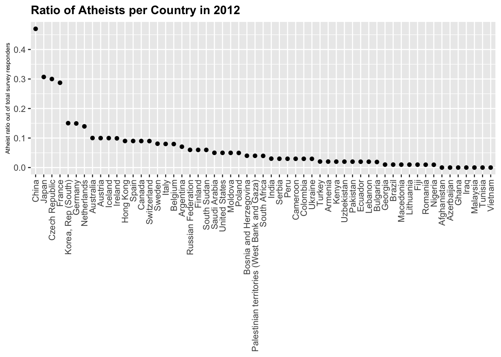
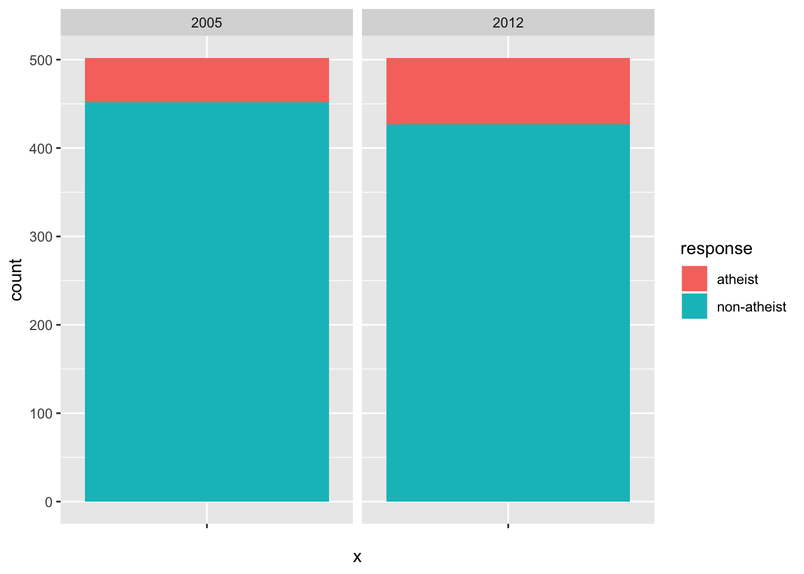
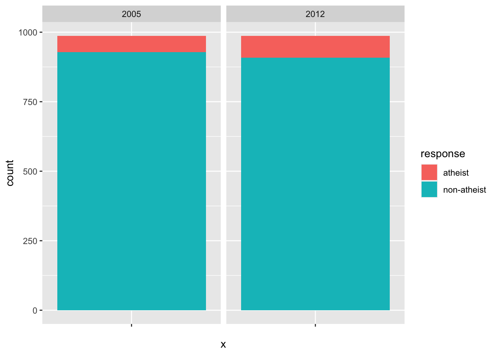

# Import atheism data
atheism_data <- read_csv(here::here('data', 'atheism.csv'))##
## ── Column specification ────────────────────────────────────────────────────────
## cols(
## nationality = col_character(),
## response = col_character(),
## year = col_double()
## )#changing input to if response is atheist, then "yes" for non-atheist "no"
clean_atheism2012 <- atheism_data %>%
filter(year==2012) %>%
group_by(nationality, response) %>%
summarise(count = n()) %>%
pivot_wider(names_from = response, values_from = count) %>%
mutate_if(is.numeric, funs(ifelse(is.na(.), 0, .))) ## `summarise()` regrouping output by 'nationality' (override with `.groups` argument)## `mutate_if()` ignored the following grouping variables:
## Column `nationality`## Warning: `funs()` is deprecated as of dplyr 0.8.0.
## Please use a list of either functions or lambdas:
##
## # Simple named list:
## list(mean = mean, median = median)
##
## # Auto named with `tibble::lst()`:
## tibble::lst(mean, median)
##
## # Using lambdas
## list(~ mean(., trim = .2), ~ median(., na.rm = TRUE))
## This warning is displayed once every 8 hours.
## Call `lifecycle::last_warnings()` to see where this warning was generated.colnames(clean_atheism2012) <- c("country","no_atheist", "atheist")
ratio_atheism <- clean_atheism2012 %>%
summarise(ratio=(atheist)/(no_atheist + atheist)) %>%
arrange(desc(ratio)) ## `summarise()` ungrouping output (override with `.groups` argument)ratio_plot <- ggplot(ratio_atheism, aes(x=reorder(country, -ratio), y=ratio)) + geom_point()+ theme(axis.text.x = element_text(angle = 90, vjust = 0.5, hjust=1)) + labs(title="Ratio of Atheists per Country in 2012", y="Atheist ratio out of total survey responders") + theme(axis.title.x=element_blank(),plot.title = element_text(size=12, face="bold"), axis.title = element_text(size=6))
ratio_plot
atheism_germany <- atheism_data %>%
filter(nationality=="Germany") %>%
group_by(response, year) %>%
summarise(count=n())## `summarise()` regrouping output by 'response' (override with `.groups` argument)bp_germany<- ggplot(atheism_germany, aes(x="", y=count, fill=response))+
geom_bar(width = 1, stat = "identity") + facet_wrap(~ year)
bp_germany
atheism_italy <- atheism_data %>%
filter(nationality=="Italy") %>%
group_by(response, year) %>%
summarise(count = n())## `summarise()` regrouping output by 'response' (override with `.groups` argument)bp_italy<- ggplot(atheism_italy, aes(x="", y=count, fill=response))+
geom_bar(width = 1, stat = "identity") + facet_wrap(~ year)
bp_italy
##
## ── Column specification ────────────────────────────────────────────────────────
## cols(
## .default = col_character(),
## samplesize = col_double(),
## weight = col_double(),
## influence = col_double(),
## approve = col_double(),
## disapprove = col_double(),
## adjusted_approve = col_double(),
## adjusted_disapprove = col_double(),
## tracking = col_logical(),
## poll_id = col_double(),
## question_id = col_double()
## )
## ℹ Use `spec()` for the full column specifications.## Warning: hms, hm and ms usage is deprecated, please use HMS, HM or MS instead.
## Deprecated in version '1.5.6'.## Warning in qt(0.975, count - 1): NaNs produced## `summarise()` regrouping output by 'year' (override with `.groups` argument)Note that the echo = FALSE parameter was added to the code chunk to prevent printing of the R code that generated the plot.